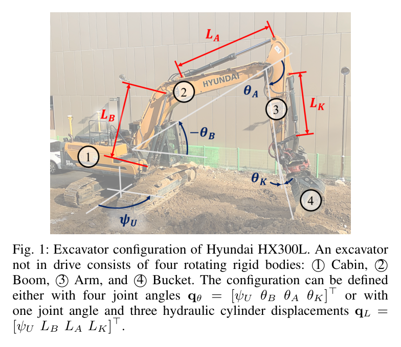
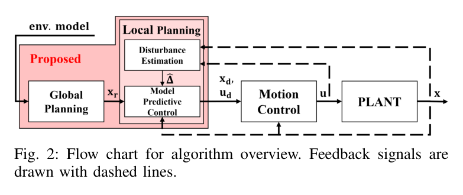
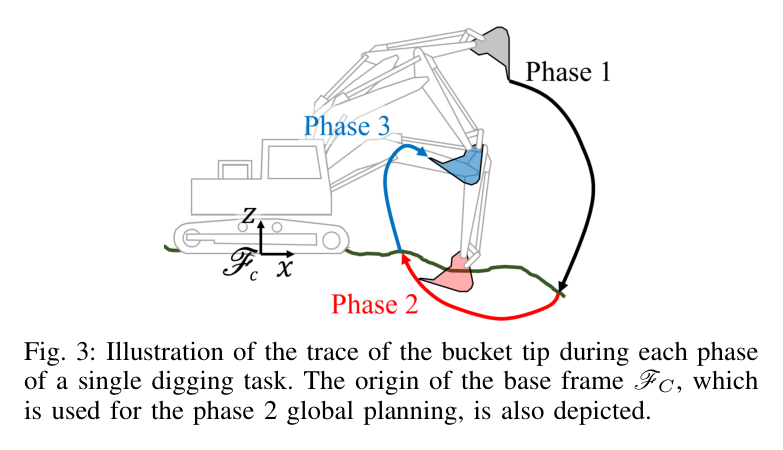
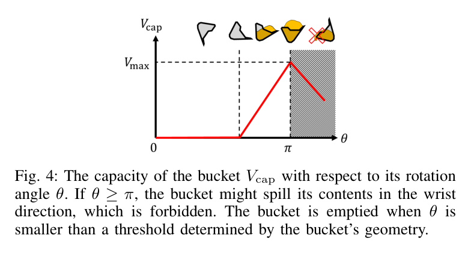
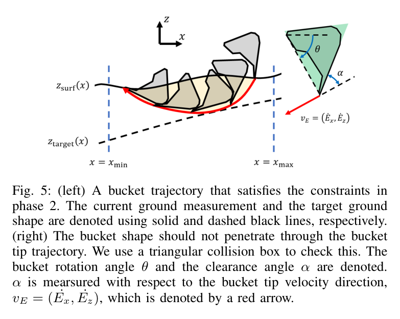
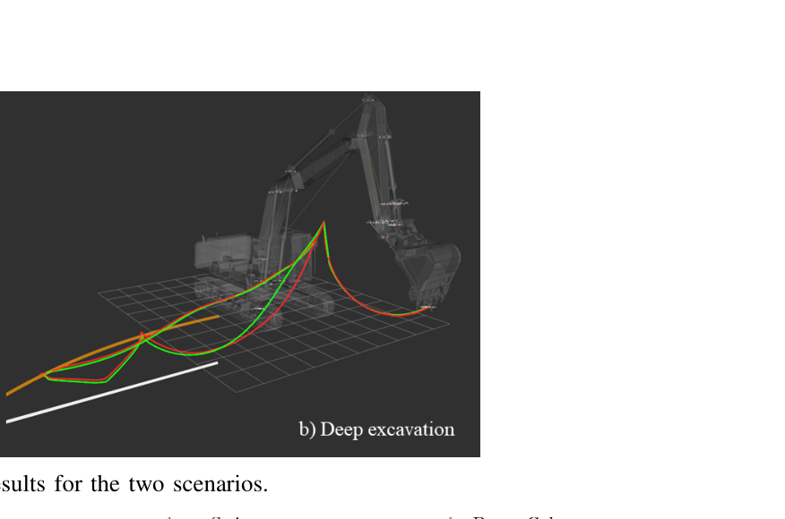
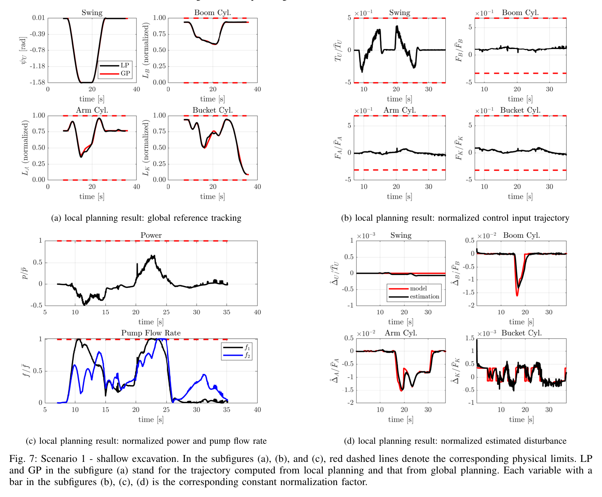
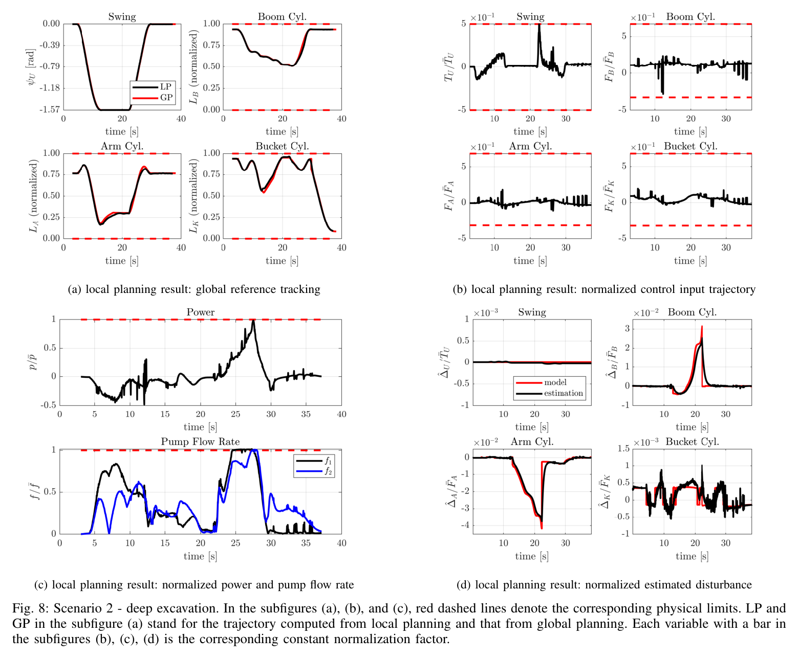

Real-Time Motion Planning of a Hydraulic Excavator using Trajectory Optimization and Model Predictive Control
Dongjae Lee, Inkyu Jang, Jeonghyun Byun, Hoseong Seo, H. Jin Kim · IEEE 원고 (arXiv:2107.02366v2)
한줄 요약 — Hyundai HX300L급 굴착기의 기하·유압 제약을 반영한 전역 경로와 고충실도 동역학·외란 추정·피드백 선형화를 결합한 국소 MPC를 계층적으로 구성하여, 수정 LuGre 마찰과 미지의 토양 상호작용이 포함된 시뮬레이션에서 얕은 굴착 21.7 ms, 깊은 굴착 30.2 ms의 폐루프 계산시간으로 모든 물리 제약을 만족했다.
1.연구 배경 및 동기
토양 불확실성과 유압 한계를 동시에 다루는 실시간 굴착 계획 문제
자율 굴착기는 버킷이 토양에 진입하기 전의 접근 동작, 토양을 절삭하며 채우는 동작, 적재물을 덤프 위치로 운반하는 동작을 연속적으로 수행해야 한다. 이때 생산성을 높이려면 충분한 토량을 확보하면서도 이동 거리와 에너지 소모를 줄여야 하고, 실제 유압 구동계가 허용하는 실린더 힘·변위·동력·펌프 유량 범위를 벗어나지 않아야 한다. 토양 반력은 지층 상태와 버킷 자세에 따라 급변하며 정확한 사전 모델을 얻기 어렵기 때문에, 정적인 기하 경로만 생성하거나 계산량이 큰 전 동작 최적화를 한 번 수행하는 방식으로는 실시간 외란과 추종 오차에 대응하기 어렵다.
논문은 이 문제를 작업 전체를 보는 전역 계획과 짧은 시간 구간을 반복 최적화하는 국소 계획으로 분할한다. 전역 계획기는 굴착량, 이동거리, 에너지와 버킷 기하를 고려해 세 작업 단계의 기준 궤적을 수 초 안에 산출하고, 국소 계획기는 고충실도 동역학과 유압 제약을 포함한 MPC로 기준을 추종한다. 모델에 포함되지 않은 토양력과 마찰은 운동량 기반 외란 추정기로 온라인 보상한다. 저자들은 이러한 결합이 힘·토크, 동력, 실린더 변위와 두 펌프의 유량 제약을 함께 만족하는 최초의 실시간 굴착 운동계획 구조라고 주장한다.

원문 Figure 1 · PDF p.1 — Fig. 1: Excavator configuration of Hyundai HX300L. An excavator not in drive consists of four rotating rigid bodies: 1⃝Cabin, 2⃝ Boom, 3⃝Arm, and 4⃝Bucket. The configuration can be defined either with four joint angles qθ = [ψU θB θA θK]⊤or with one joint angle and three hydraulic cylinder displacements qL = [ψU LB LA LK]⊤.
선행 연구의 한계
굴착 팁의 기하 경로만 생성하는 기존 방식은 실제 유압 액추에이터의 힘·동력·변위·유량 한계를 보장하지 못한다.
고충실도 동역학과 토양 상호작용을 전 작업 구간에 직접 적용하면 비선형 최적화 규모가 커져 실시간 재계획이 어렵다.
명목 토양 모델에만 의존하면 실제 토질과 모델 사이의 차이가 추종 오차와 제약 위반으로 이어질 수 있다.
단일 계획기만으로는 작업 전체의 굴착량 최적화와 수십 Hz 수준의 국소 외란 대응을 동시에 달성하기 어렵다.
이 연구의 기여
접근·절삭·운반의 세 단계를 연결하고 굴착량과 에너지 관점을 반영하는 저차원 전역 궤적 최적화를 구성했다.
굴착기 동역학, 실린더 힘·변위·동력, 두 펌프의 유량 한계를 명시적으로 포함한 재ceding-horizon 국소 MPC를 제시했다.
운동량 기반 외란 추정과 피드백 선형화를 결합해 국소 MPC의 계산 복잡도를 줄이면서 미지 토양력을 보상했다.
HX300L급 파라미터와 별도의 마찰·토양 plant 모델을 이용한 얕은 굴착 및 깊은 굴착 시나리오에서 30 Hz 이상의 계산 성능을 확인했다.
2.방법론 및 시스템 구성
전역 계획은 굴착 작업을 세 구간으로 나눈다. 1단계는 초기 자세에서 토양 진입점까지 이동하는 접근 구간, 2단계는 버킷 팁이 토양을 절삭하며 목표 토량을 확보하는 구간, 3단계는 채운 버킷을 토양 밖의 덤프 자세로 운반하는 구간이다. 절삭 구간에서는 버킷 팁 궤적과 지표면 사이의 쓸린 부피를 굴착량으로 계산하고, 실린더 이동량을 줄이면서 요구 토량을 얻도록 목적함수를 둔다. 진입 영역, 목표 깊이, 지표면, 버킷 회전의 단조성, clearance angle, 버킷 몸체의 간섭, 적재물 유출 방지 조건도 기하 제약으로 포함한다.
접근 및 운반 구간의 조인트 궤적은 Bernstein 다항식으로 나타내고, 경계 자세와 속도, 위치·속도·가속도 범위, 운반 중 버킷 입구 방향을 제한한다. 전역 계획 결과는 국소 MPC의 기준으로 전달된다. 국소 계획은 1초의 예측구간에서 20 ms 간격으로 동역학을 적분하며, 실린더 구동력과 유압 유량을 제어 변수에 연결한다. 모델과 실제 plant의 차이는 일반화 운동량 잔차를 저역통과시킨 외란 추정치로 얻고, 이를 피드백 선형화 입력에서 상쇄한 뒤 선형화된 오차 동역학을 MPC로 최적화한다.
처리 파이프라인
1
지형과 작업 경계 설정
센서 또는 토탈스테이션으로 얻었다고 가정한 지표 형상, 목표 굴착 형상, 시작 자세와 덤프 자세를 입력한다. 2차원 시상면에서 버킷 팁의 진입 영역과 목표 깊이, 적재 중 내용물 유출을 피할 자세 범위를 정의한다.
2
세 단계 전역 궤적 생성
접근과 운반 구간은 각각 9개의 Bernstein 제어점으로, 절삭 구간은 20개의 경유점으로 매개화한다. 절삭 부피, 실린더 이동과 작업 에너지, 기하 충돌 및 적재 조건을 포함하는 비선형 문제를 ALGLIB 기반 최적화로 푼다.
3
고충실도 국소 모델 구성
조인트 동역학을 실린더 좌표계와 연결하고, 힘·토크, 동력, 실린더 stroke, 두 유압 펌프의 합산 유량 상한을 예측구간의 제약으로 둔다. 전역 계획에서는 생략한 빠른 동역학과 유압 한계를 이 단계에서 직접 처리한다.
4
운동량 기반 외란 추정
명목 관성·코리올리·중력 모델에서 계산한 일반화 운동량과 측정 운동량의 차이를 이용해 토양력과 마찰을 합친 외란을 추정한다. 추정 신호는 저역통과 구조를 거쳐 제어 입력에 반영된다.
5
피드백 선형화 MPC 재계획
명목 동역학과 추정 외란을 상쇄하는 입력을 적용해 조인트 가속도 수준의 선형 오차계를 만들고, 기준 추종 오차와 제어 노력의 합을 최소화한다. 20 ms마다 새 상태와 외란 추정치를 반영해 최적화하고 첫 입력만 plant에 적용한다.
원문 수식과 의미
절삭 단계 목적함수
실린더 좌표의 누적 이동을 억제하는 항과 버킷 팁 궤적이 쓸어낸 굴착 부피 V를 크게 만드는 항을 함께 사용한다. 정확한 가중치와 이산화 표기는 원문의 식 (4)에 따른다.
국소 계획기의 물리 제약
실린더별 힘과 동력, stroke, 펌프가 공급해야 하는 총 유량을 제한한다. 논문에서는 두 펌프에 연결된 실린더 조합을 각각 구분하여 식 (10)의 제약으로 구성한다.
운동량 기반 외란 추정
일반화 운동량 p와 명목 동역학의 불일치로부터 미지 외란을 재귀적으로 추정하는 식 (11)의 구조다. 추정치는 토양 반력과 명목 모델에 없는 마찰을 함께 포괄한다.
피드백 선형화 입력
명목 비선형 항과 추정 외란을 상쇄하고 새로운 입력 v에 대해 단순화된 가속도 동역학을 얻는다. 이 변환 뒤의 MPC가 기준 오차와 입력을 최적화한다.

원문 Figure 2 · PDF p.2 — Fig. 2: Flow chart for algorithm overview. Feedback signals are drawn with dashed lines.

원문 Figure 3 · PDF p.3 — Fig. 3: Illustration of the trace of the bucket tip during each phase of a single digging task. The origin of the base frame FC, which is used for the phase 2 global planning, is also depicted.
3.핵심 기술
작업 의미를 보존한 전역 궤적 최적화
전역 계획기는 단순한 끝점 연결이 아니라 굴착의 물리적 의미를 비용과 제약으로 표현한다. 절삭 경로와 지표면 사이의 면적을 버킷 폭과 결합해 쓸린 부피를 계산하고, 버킷 회전과 clearance angle을 제한해 토양을 실제로 담을 수 있는 운동을 유도한다. 버킷 용량과 회전각의 관계, 버킷 몸체가 팁 궤적 위쪽에 남아야 한다는 조건도 사용해 기하적으로 그럴듯하지만 수행 불가능한 경로를 제거한다.
접근과 운반 구간을 Bernstein 다항식으로 압축한 것은 전 작업을 고해상도 직접전사하는 것보다 변수 수를 줄이면서도 경계 조건과 도함수 범위를 다루기 쉽게 한다. 이 전역 해가 생산량과 거시 경로를 정하고, 빠른 국소 계획기가 실제 동역학에 맞게 수정하는 계층 분담이 실시간성의 핵심이다.
절삭 경로는 지표면 아래이면서 목표 형상 위에 위치하도록 제한된다.
버킷 회전은 절삭 중 단조롭게 진행되고 적재물 유출을 피하도록 입구 방향이 제한된다.
접근·운반 구간의 위치·속도·가속도와 시작·종료 경계 조건을 다항식 계수 수준에서 처리한다.
얕은 굴착과 깊은 굴착에 동일한 구조를 적용하되 서로 다른 진입점과 목표 깊이를 최적화한다.
외란 추정이 결합된 제약 MPC
국소 계획기는 전역 기준을 그대로 재생하는 추종기가 아니라, 예측구간 동안의 힘·동력·변위·유량을 검사하면서 가능한 운동으로 재구성한다. 유압 굴착기는 여러 실린더가 펌프 용량을 공유하므로 조인트별 속도 제한만으로는 유량 부족을 포착할 수 없다. 논문은 실린더 면적과 속도로 계산한 유량 합을 펌프별 상한에 연결해 동시 구동 시의 병목을 직접 제한한다.
시뮬레이션 plant에는 계획기가 알지 못하는 수정 LuGre 마찰과 수정된 FEE 토양력이 들어간다. 운동량 외란 추정기가 이 차이를 관측하고 피드백 선형화에 제공하므로, MPC는 복잡한 비선형 토양 모델을 매 반복에서 식별하지 않고도 잔여 오차를 보상한다. 계산은 DDP와 augmented Lagrangian 기반으로 수행되며, 물리 제약을 포함하고도 제어 주기 안에서 종료된다.
예측구간은 1000 ms, 이산화 및 적분 간격은 20 ms다.
MPC는 50개 예측 스텝에 걸친 기준 오차와 제어 입력을 평가한다.
외란 추정치는 명목 plant와 실제 plant 사이의 마찰 및 토양력 차이를 포괄한다.
DDP에 augmented Lagrangian을 결합해 상태·입력 부등식 제약을 처리한다.

원문 Figure 4 · PDF p.3 — Fig. 4: The capacity of the bucket Vcap with respect to its rotation angle θ. If θ ≥π, the bucket might spill its contents in the wrist direction, which is forbidden. The bucket is emptied when θ is smaller than a threshold determined by the bucket’s geometry.

원문 Figure 5 · PDF p.4 — Fig. 5: (left) A bucket trajectory that satisfies the constraints in phase 2. The current ground measurement and the target ground shape are denoted using solid and dashed black lines, respectively. (right) The bucket shape should not penetrate through the bucket tip trajectory. We use a triangular collision box to check this. The bucket rotation angle θ and the clearance angle α are denoted. α is mearsured with respect to the bucket tip velocity direction, vE = ( ˙Ex, ˙Ez), which is denoted by a red arrow.
4.실험 결과
실험 환경·장비·데이터
ROS와 C++로 구현하고 Hyundai HX300L 굴착기의 질량·기하·유압 파라미터를 사용한 시뮬레이션에서 평가했다.
계획기와 분리된 plant에는 수정 LuGre 마찰 모델과 수정 FEE 토양 상호작용 모델을 넣어, 계획기가 정확한 토양·마찰 파라미터를 알지 못하도록 구성했다.
전역 계획은 ALGLIB를 사용했고 접근·운반 구간마다 Bernstein 제어점 9개, 절삭 구간에는 경유점 20개를 사용했다.
얕은 굴착과 깊은 굴착의 두 시나리오에 대해 전역 계획기로 세 단계 기준 궤적을 먼저 계산했다.
각 기준 궤적을 따라 plant를 폐루프로 시뮬레이션하고 20 ms마다 국소 최적화, 외란 추정과 제어 입력 갱신을 반복했다.
조인트 및 실린더 궤적, 추정 토양력, 실린더 힘·동력·변위, 펌프 유량을 기록해 상·하한 만족 여부를 확인했다.
전역 계산시간과 한 번의 국소 MPC 평균 계산시간을 각각 측정해 계획 및 제어 주기 적합성을 평가했다.
비교 기준
별도의 기존 알고리즘과 정량 비교는 수행하지 않았으며 얕은 굴착과 깊은 굴착 두 난이도 조건을 비교했다.
명목 계획 모델과 수정 LuGre·FEE plant를 분리하여 모델 불일치가 존재하는 조건에서 외란 보상 성능을 검증했다.
전역 계획과 국소 MPC의 역할을 분리해 수 초 단위 전체 계획과 30 Hz 이상 국소 재계획의 계산시간을 각각 보고했다.
평가 지표
전역 궤적 최적화 계산시간
국소 MPC 1회 평균 계산시간과 환산 주파수
실린더 힘·동력·변위 제한 만족 여부
두 펌프의 유량 제한 만족 여부
기준 궤적에 대한 조인트·버킷 팁 추종과 외란 추정 거동

원문 Figure 6 · PDF p.7 — Fig. 6: Global planning results for the two scenarios.
핵심 결과 해석
얕은 굴착에서는 전역 궤적을 2.1초에 생성했고 국소 MPC 한 번의 평균 계산시간은 21.7 ms로 약 46 Hz에 해당했다. 깊은 굴착에서는 전역 계획이 1.6초, 국소 MPC가 30.2 ms로 약 33 Hz였다. 두 시나리오 모두 논문이 목표로 한 30 Hz 이상의 재계획 속도를 확보했으며, 전역 계획의 수 초 계산은 작업 시작 전 또는 작업 단계 사이에서 사용할 수 있는 범위로 제시됐다.
결과 도표는 토양력이 증가하는 절삭 구간에서도 실린더 힘과 동력, stroke, 펌프 유량이 설정된 경계를 넘지 않도록 국소 궤적이 조정되는 모습을 보인다. 모델이 알지 못하는 토양 및 마찰 항은 외란 추정치에 반영됐고, 버킷 팁은 전역 기준의 작업 형상을 유지하면서 물리 제약을 만족했다. 특히 깊은 굴착에서 계산시간이 증가했지만 여전히 30 Hz를 넘었다는 점이 계층 구조의 계산 가능성을 뒷받침한다.
다만 결과는 모두 시뮬레이션이며 실제 굴착기에서 밸브 지연, 압력 포화, 센서 잡음, 토양 파괴의 비정상성을 검증하지 않았다. 제시된 성능은 HX300L 파라미터와 선택한 두 plant 모델에서의 가능성 증명으로 해석해야 하며, 실기 생산량이나 에너지 절감률을 기존 방식과 비교한 결과는 아니다.
정량 결과
평가 항목
정량 결과
조건·맥락
원문 근거
얕은 굴착 전역 계획시간
2.1 s
9개 Bernstein 제어점과 20개 절삭 경유점을 사용한 전체 세 단계 궤적 최적화
PDF p.6
얕은 굴착 국소 MPC 평균 계산시간
21.7 ms, 약 46 Hz
1000 ms horizon과 20 ms 이산화 조건
PDF p.6
깊은 굴착 전역 계획시간
1.6 s
깊은 절삭 시나리오의 전체 궤적 생성
PDF p.6
깊은 굴착 국소 MPC 평균 계산시간
30.2 ms, 약 33 Hz
물리 제약 및 외란 추정을 포함한 폐루프 최적화
PDF p.6
제약 만족
두 시나리오 모두 모든 설정 물리 제약 만족
실린더 힘·동력·변위 및 펌프 유량 경계
PDF p.6
실패 사례와 경계조건
실제 장비 실험이 없어 밸브 동역학, 압력 센서 잡음, 통신 지연과 실제 토양 붕괴가 동시에 존재할 때의 실패 양상은 확인되지 않았다.
지표면과 목표 형상이 사전에 알려진다는 가정이 깨지면 전역 절삭 부피와 기하 제약 자체가 부정확해질 수 있다.
국소 외란 추정의 대역폭보다 토양력이 빠르게 변하거나 접촉 충격이 커질 경우 추정 지연으로 순간적인 오차가 생길 수 있다.
직접 비교 baseline과 반복 통계가 없어 계산시간과 제약 만족 외의 생산성·에너지 우위는 입증되지 않았다.

원문 Figure 7 · PDF p.7 — Fig. 7: Scenario 1 - shallow excavation. In the subfigures (a), (b), and (c), red dashed lines denote the corresponding physical limits. LP and GP in the subfigure (a) stand for the trajectory computed from local planning and that from global planning. Each variable with a bar in the subfigures (b), (c), (d) is the corresponding constant normalization factor.

원문 Figure 8 · PDF p.8 — Fig. 8: Scenario 2 - deep excavation. In the subfigures (a), (b), and (c), red dashed lines denote the corresponding physical limits. LP and GP in the subfigure (a) stand for the trajectory computed from local planning and that from global planning. Each variable with a bar in the subfigures (b), (c), (d) is the corresponding constant normalization factor.
5.한계 및 향후 연구
현재 한계
HX300L 파라미터를 사용했지만 평가는 수정 LuGre와 수정 FEE 모델 기반 시뮬레이션에 한정된다.
지표면 형상과 목표 형상을 사전에 정확히 획득할 수 있다고 가정하며 온라인 지형 갱신은 통합하지 않았다.
얕은 굴착과 깊은 굴착 두 사례만 제시해 토양 종류, 수분, 암석과 층상 지반에 대한 일반화가 확인되지 않았다.
전역 계획은 국소 계획보다 단순한 모델을 사용하므로 매우 강한 물리 제약에서는 기준 경로와 실제 가능 경로의 차이가 커질 수 있다.
다른 계획·제어법과의 정량 비교, 반복 횟수에 따른 분산, 실제 에너지와 굴착 생산량 측정이 없다.
향후 연구
실제 유압 굴착기에서 토양 접촉, 밸브 지연과 센서 잡음을 포함한 폐루프 검증을 수행한다.
LiDAR나 비전 기반 온라인 지형 추정과 계획기를 결합해 굴착 중 변하는 표면을 반영한다.
다양한 토질과 암석 혼입 조건에서 외란 추정기의 대역폭과 강인성을 평가한다.
전역 계획과 국소 MPC 사이의 제약 정보를 더 긴밀히 공유해 처음부터 실행 가능한 기준을 생성한다.
기존 경로 계획·MPC·숙련자 작업과 생산량, 사이클 시간, 연료·에너지 사용량을 반복 비교한다.
6.한마디로 정리
핵심 방법은?
작업 전체는 저차원 전역 궤적 최적화로, 빠른 제약 대응은 운동량 외란 추정과 피드백 선형화가 결합된 국소 MPC로 분담했다.
핵심 결과는?
HX300L급 시뮬레이션에서 얕은 굴착은 21.7 ms, 깊은 굴착은 30.2 ms의 국소 계산시간을 기록하며 실린더와 펌프 제약을 만족했다.
한계는?
실기 검증, 온라인 지형 갱신, 다양한 토양과 비교 baseline이 없으므로 실제 생산성과 강인성은 후속 검증이 필요하다.
이 구조는 필드로봇 대시보드에서 작업 계획과 실시간 제어를 분리해 관찰하는 기준 모델로 활용할 수 있다. 대시보드는 전역 계획의 예상 토량·에너지·진입점과 국소 MPC의 힘·동력·유량 여유, 외란 추정치를 서로 다른 시간축으로 표시하면 계획 오류와 토양 변화의 영향을 구분할 수 있다.
맥락지능 기반 이동형 양팔 또는 작업 로봇에도 같은 계층 원리가 적용된다. 상위 계층은 작업 의미와 장기 목표를 최적화하고, 하위 계층은 액추에이터 한계와 예상 밖 접촉을 짧은 horizon에서 보정한다. 다만 실제 현장 적용에는 지형 인식과 이동 베이스 상태, 안전 정지 논리를 추가해야 한다.
전역 생산계획과 국소 제약제어를 분리한 계층형 자율작업 아키텍처의 직접 사례다.
외란 추정값을 토질 변화나 예상 밖 접촉을 나타내는 현장 상태 지표로 활용할 수 있다.
실린더 힘·동력·stroke·펌프 유량의 잔여 여유를 작업 안전 대시보드 핵심 신호로 구성할 수 있다.
시뮬레이션 기반이므로 실제 장비 적용 전에는 지형 인식, 밸브 동역학과 비상정지 계층을 보강해야 한다.
7.전체 그림·표
본문 핵심 위치에 배치하지 않은 원문 Figure와 Table을 원문 페이지 순서로 수록한다.